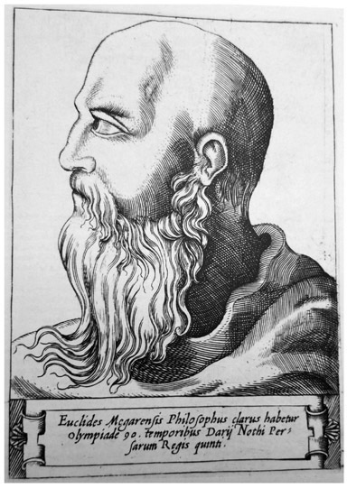
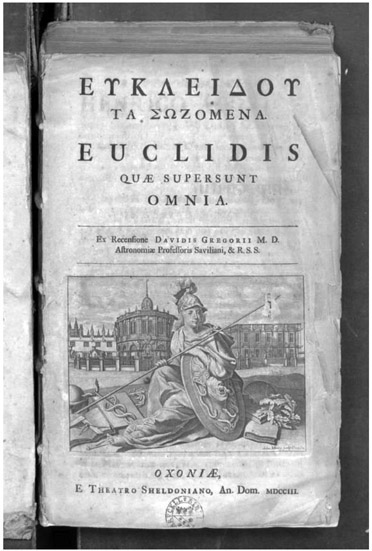
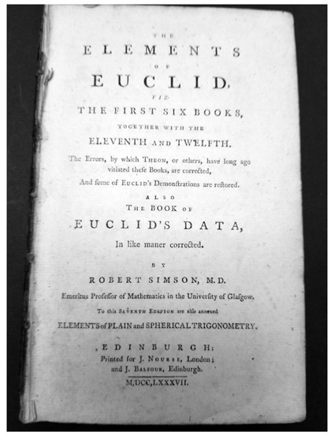
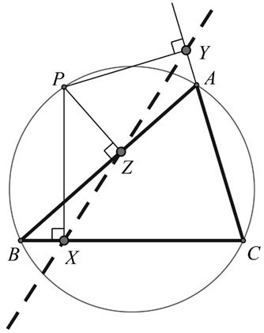
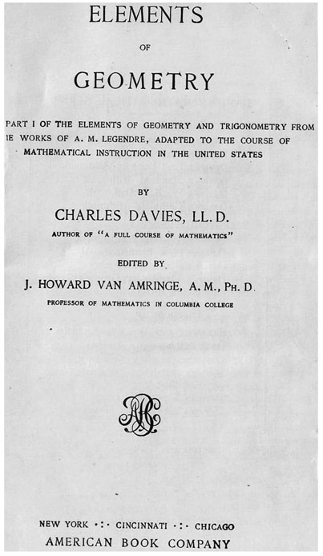

Euclid: Greek (ca. 300 BCE)
No collection of extraordinary mathematicians would be complete without including Euclid, who was often known as Euclid of Alexandria (a city in Hellenistic Egypt). Although there is hardly any evidence about his life available, it is believed that he lived around 347 BCE. Centuries later, Euclid was popularized by the Greek philosopher Proclus Lycaeus (ca. 450 CE).1 What little is known about his life is that he probably received his mathematical training in Athens, from Plato’s pupils, since most of the geometers seem to have gravitated there. Even Euclid’s time in Alexandria is not clearly defined, since the Greek mathematician Apollonius, who flourished around 200 BCE, makes reference to Euclid in the introduction to his book Conics. Therefore, we deduce that Euclid must have lived prior to that time, and the reference provides further evidence of the importance of his book Elements. Beyond this book on geometry, Euclid was also the author of a book on optics, which he approached from a geometric standpoint.
Although Euclid is best known for the Elements, there is no original copy of this work. There is also a persistent belief that the Elements—which consists of thirteen books—was merely a work that Euclid wrote as a collection of material that had been previously developed by many mathematicians. In any case, the Elements is one of the most important works in mathematics, and although it is largely a study of geometry, it also includes a fair amount of number theory. What makes the Elements so remarkable is to a lesser extent previously unknown mathematical results contained in this work, but much more the organization of the material. Euclid begins with definitions and five postulates (axioms), followed by theorems and their proofs. All theorems are derived from the five axioms stated at the beginning. Throughout the book he kept a very high level of rigor, dramatically raising the standard for any mathematical work to be written in the future. The clarity with which the theorems are stated and proved is unprecedented. The Elements basically defined the style of modern mathematical literature (see fig. 4.2).

Figure 4.1. Euclid.
The traditional geometry course that today is offered in most American high schools is based on the work of Euclid. It is, therefore, called Euclidean geometry, which refers to geometry on a plane (as opposed to, for example, geometry on the surface of a sphere). Perhaps the most significant principle that commands the geometry throughout the rest of Elements is Euclid’s fifth postulate. It reads as follows:
If a line segment intersects two straight lines, forming two interior angles on the same side of that given line, such that sum of their measures is less than two right angles, then the two lines, if extended indefinitely, will meet on that same side of the given line, where those two angles have a sum less than two right angles.

Figure 4.2. The 1704 edition of Euclid’s Elements.
This was vastly simplified in 1846 by the Scottish mathematician John Play-fair (1748–1819), who stated an equivalent postulate, known today as Play-fair’s axiom. It reads as follows:
In a plane, given a line and a point not on it, at most, one line parallel to the given line can be drawn through the point.
It is this axiom that today guides the basics in Euclidean geometry.
The high-school study of geometry in the United States is rather unique in the world today, in that an entire school year is devoted to the logical development of geometry. This essentially began with the Scottish mathematician Robert Simson’s (1687–1768) classic geometry book titled The Elements of Euclid. This book, published in 1756, offered the first English version of this classic work by Euclid; furthermore, it was also the basis for the study of geometry in England. In figure 4.3, we show the seventh edition from 1787.

Figure 4.3. The seventh edition of The Elements of Euclid, by Robert Simson, published in 1787.
Through this we can appreciate the notion that Euclid’s influence transcended the study of geometry. Yet the study of geometry took its own path through Simson’s English version, which was then adopted and modified by the French mathematician Adrien-Marie Legendre (1752–1833). In 1794, Legendre wrote a textbook titled Eléments de géométrie, which in turn became the model for the American high-school geometry courses as we know them today. It came to prominence in a rather circuitous route: first from Euclid, then to Simson, then to Legendre. Then, Legendre’s book was translated from French by David Brewster in 1828 and titled Elements of Geometry and Trigonometry; from there it was adapted in 1862 by the American mathematician Charles Davies (1798–1876) as a school course, although, in the early days this was also a college-level course. Simson was so popular as a geometer that there were even theorems named for him about which he knew nothing. For example, the famous geometry theorem carrying his name—the Simson line—was first developed by the Scottish mathematician William Wallace in 1799, well after Simson’s death. It states that from any point on the circumscribed circle of a triangle, the feet of the perpendiculars drawn to each of the three sides are collinear. This can be seen in figure 4.4.
The Elements had great influence beyond the realm of mathematics, reaching across the ages to influence American history as well. For example, in his 1860 autobiography, President Abraham Lincoln stated about himself (in the third person), “After he was twenty-three and had separated from his father, he studied English grammar—imperfectly, of course, but so as to speak and write as well as he now does. He studied and nearly mastered the six books of Euclid, since he was a member of Congress.”2 Although the first six books have to do largely with geometry, they provided for Lincoln an ability to improve his mental faculties, especially his powers of logic and language. He even referred to Euclid in the famous fourth debate he had in 1858 with Senator Stephen A. Douglas (1813–1861) in Charleston, South Carolina. Referencing Euclid, he said:

Figure 4.4. Simson’s line.

Figure 4.5. The first American geometry course book.
If you have ever studied geometry, you remember that by a course of reasoning, Euclid proves that all the angles of a triangle are equal to two right angles. Euclid has shown you how to work it out. Now, if you undertake to disprove that proposition, and to show that it is erroneous, would you prove it to be false by calling Euclid a liar?3
It was also known at the time that when Lincoln traveled by horseback, he always carried a copy of Euclid’s Elements in his saddlebags. Although Lincoln had no formal education, we can see that his devotion to learning was truly remarkable, and the influence of Euclid was of particular note.
Although we have very little information about Euclid’s biography, we can see the legacy that he initiated through his famous book Elements. To the present day, not only does it provide the basis for our high-school geometry studies, but it also has played a notable role in our logical thinking on the national level, as was exhibited by Abraham Lincoln’s application of Euclid’s reasoning. Through Euclid’s influence, we see how the reach of these early mathematicians has spread beyond mathematics itself to encompass science, logic, philosophy, education, and more.